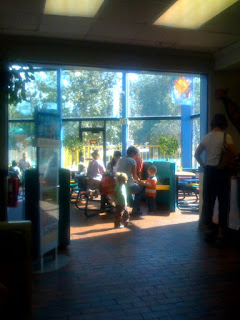

Recovered weblog entry
McDonalds

I'm sitting here with Sumner at the same McDonalds that I would visit
when I was his age. It looks largely the same in the dining area,
though I am disappointed that the play area has been robbed of Mayor
McCheese, Grimace, and the Hamburgler. It's also moved indoors, though
that's understandable with the climate.
Sumner really doesn't believe me that I used to live here when I was
his age. I'll keep trying to convince him today.
RD Burningham
Sent from my iPhone